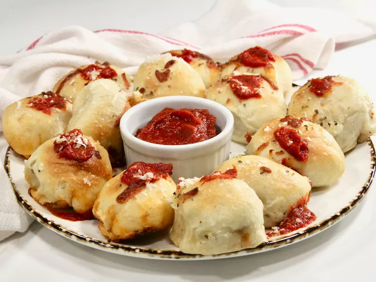

Home
Pizza Poppers

Description
These pizza poppers are mini pizza bites, customized with your favorite pizza toppings. They’re the perfect game day snack, finger-friendly for kids, and good for any get-together.
Ingredients
- 1 cup shredded mozzarella cheese
- 1/3 cup cooked and crumbled bulk Italian sausage
- 1/3 cup chopped pepperoni
- 1 pound fresh pizza dough
- 1 1/4 cups pizza sauce
- 2 tablespoons vegetable oil, or more as needed
Steps
- Preheat oven
- Combine mozzarella sausage